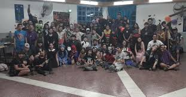
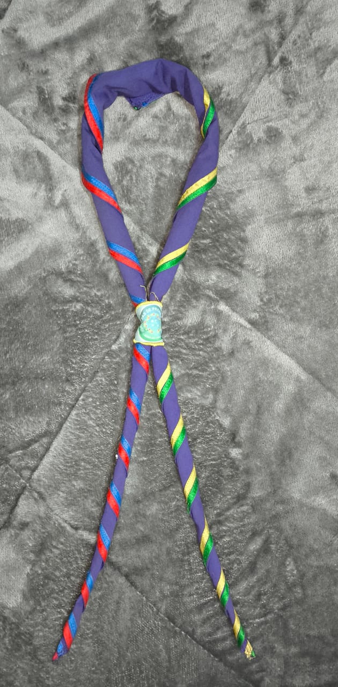
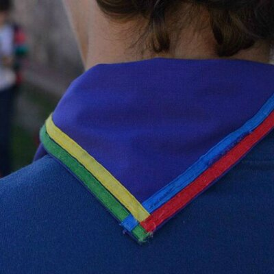

Nuestro Grupo empezo a funcionar el dia 21 de septiembre en el año 2001. Se fundo con el nombre Eduardo Levy en honor a un scout que post-dictadura se encargo de abrir y re abrir grupos Scout en toda Córdoba.
En sus inicios, el Grupo Scout Eduardo Levy comenzo unicamente con las ramas Manada y Unidad. Luego, con el pasos de los años, nuestros fue creciendo e incorporandose las Ramas Caminantes y la rama Rover.

"Fiesta de Halloween GSEL 2024"
Nuestro Pañuelo
El Pañuelo es el elemento que representa a cada grupo. Nuestro pañuelo posee el color Obispo/ violeta representando el color de Scout Mundial y en los extremos cintas con los colores en representacion de cada rama que conforma nuestro grupo, siendo el amarillo para la manada, el verde para la Unidad Scout, el azul para los Caminantes y el rojo para la rama Rover. Y en el reverso podemos ver como las cintas se unen simbolizando la union de las ramas y como el mayor proteje al menor.

